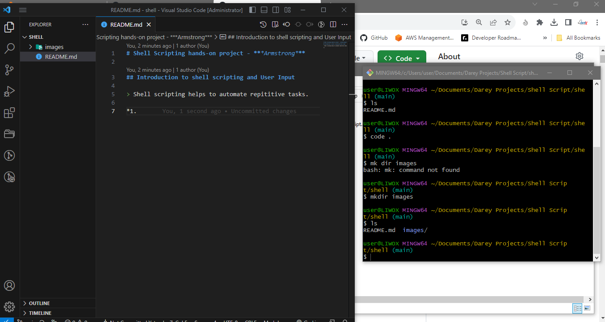
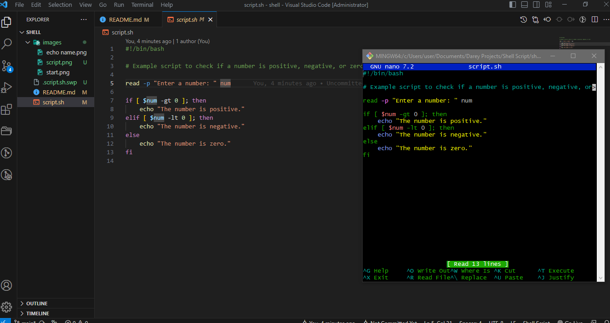
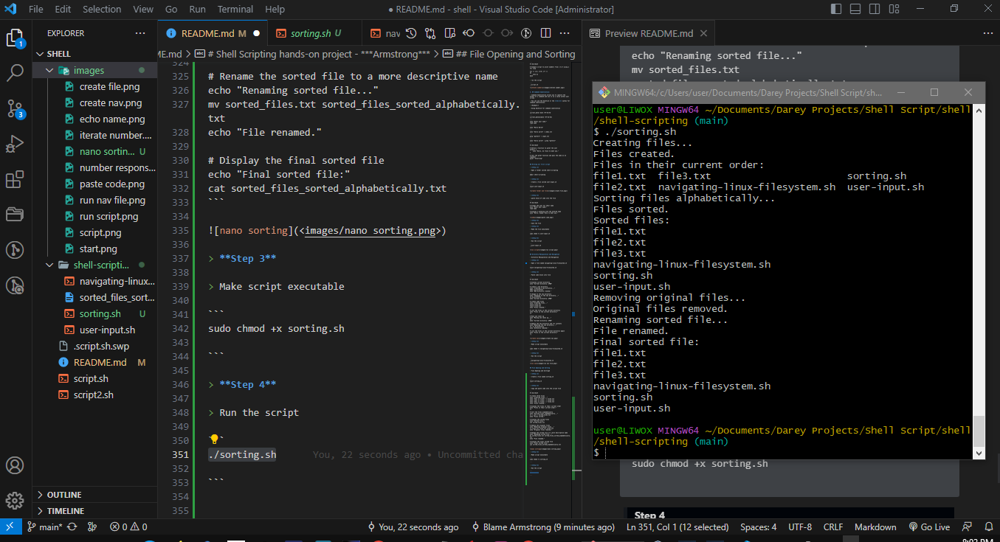
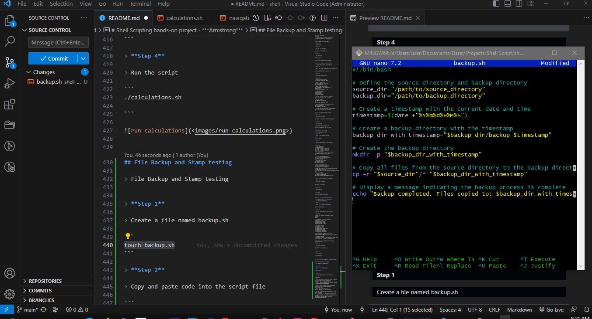

Shell scripting helps to automate repititive tasks.
Bash scripts are essentially a series of commands and instructions that are executed sequentially in a shell.

touch script.sh
...
Bash allows you to define work with variables
Variables can store date of various kinds
You can assign values to various variables using the = operator, and access their values using the variable name preceded by a $ sign.
Example : Assign value to variable
name="Armstrong"
echo $name
Bash provides control flow statements like:
if-else
for loopsand case statements to control the flow of the execution in your scripts.
Example: Using if-else to execute script based on a condition.
#!/bin/bash
# Example script to check if a number is positive, negative, or zero
read -p "Enter a number: " num
if [ $num -gt 0 ]; then
echo "The number is positive."
elif [ $num -lt 0 ]; then
echo "The number is negative."
else
echo "The number is zero."
fi

chmod +x script.sh
run the script
./script.sh

Example : Iterating through a list using a for loop
#!/bin/bash
# Example script to print numbers from 1 to 5 using a for loop
for (( i=1; i<=5; i++ ))
do
echo $i
done
run the script
./script.sh

Command Substitution allows you to capture the output of a command and use it as a value within your script.
You can use the backtick or the $() syntax for command substitution.
Example:
Using backtick for command substitution
current_date=`date +%Y-%m-%d`
current_date=$(date +%Y-%m-%d)
echo "Enter your name:"
read name
echo "Hello World"
echo "hello world" > index.txt
grep "pattern" < input.txt
echo "hello world" | grep "pattern"
#!/bin/bash
# Define a function to greet the user
greet() {
echo "Hello, $1! Nice to meet you."
}
# Call the greet function and pass the name as an argument
greet "Armstrong"
Step 1
Open a folder called shell-scripting
mkdir shell-scripting
Step 2
Create a file called user-input.sh
touch user-input.sh

Step 3
paste block of code into the file
#!/bin/bash
# Prompt the user for their name
echo "Enter your name:"
read name
# Display a greeting with the entered name
echo "Hello, $name! Nice to meet you."

Step 4
Save the file
Step 5
Make the file executable
sudo chmod +x user-input.sh
Step 6
Run the script
./user-input.sh

Directory Manipulation and Navigation
Step 1
Open a file named navigating-linux-filesystem.sh
touch navigating-linux-filesystem.sh
Step 2
Paste code block into file
#!/bin/bash
# Display current directory
echo "Current directory: $PWD"
# Create a new directory
echo "Creating a new directory..."
mkdir my_directory
echo "New directory created."
# Change to the new directory
echo "Changing to the new directory..."
cd my_directory
echo "Current directory: $PWD"
# Create some files
echo "Creating files..."
touch file1.txt
touch file2.txt
echo "Files created."
# List the files in the current directory
echo "Files in the current directory:"
ls
# Move one level up
echo "Moving one level up..."
cd ..
echo "Current directory: $PWD"
# Remove the new directory and its contents
echo "Removing the new directory..."
rm -rf my_directory
echo "Directory removed."
# List the files in the current directory again
echo "Files in the current directory:"
ls

Step 3
Make script executable
sudo chmod +x navigating-linux-filesystem.sh
Step 4
Run the script
./navigating-linux-filesystem.sh

File Opening and SortingS
Step 1
Create a file named sorting.sh
touch sorting.sh
Step 2
Copy and paste code into the script file
#!/bin/bash
# Create three files
echo "Creating files..."
echo "This is file3." > file3.txt
echo "This is file1." > file1.txt
echo "This is file2." > file2.txt
echo "Files created."
# Display the files in their current order
echo "Files in their current order:"
ls
# Sort the files alphabetically
echo "Sorting files alphabetically..."
ls | sort > sorted_files.txt
echo "Files sorted."
# Display the sorted files
echo "Sorted files:"
cat sorted_files.txt
# Remove the original files
echo "Removing original files..."
rm file1.txt file2.txt file3.txt
echo "Original files removed."
# Rename the sorted file to a more descriptive name
echo "Renaming sorted file..."
mv sorted_files.txt sorted_files_sorted_alphabetically.txt
echo "File renamed."
# Display the final sorted file
echo "Final sorted file:"
cat sorted_files_sorted_alphabetically.txt

Step 3
Make script executable
sudo chmod +x sorting.sh
Step 4
Run the script
./sorting.sh

Working with numbers and calculations
File Opening and SortingS
Step 1
Create a file named calculations.sh
touch calculations.sh
Step 2
Copy and paste code into the script file
#!/bin/bash
# Define two variables with numeric values
num1=10
num2=5
# Perform basic arithmetic operations
sum=$((num1 + num2))
difference=$((num1 - num2))
product=$((num1 * num2))
quotient=$((num1 / num2))
remainder=$((num1 % num2))
# Display the results
echo "Number 1: $num1"
echo "Number 2: $num2"
echo "Sum: $sum"
echo "Difference: $difference"
echo "Product: $product"
echo "Quotient: $quotient"
echo "Remainder: $remainder"
# Perform some more complex calculations
power_of_2=$((num1 ** 2))
square_root=$(awk "BEGIN{ sqrt=$num2; print sqrt }")
# Display the results
echo "Number 1 raised to the power of 2: $power_of_2"
echo "Square root of number 2: $square_root"

Step 3
Make script executable
sudo chmod +x calculations.sh
Step 4
Run the script
./calculations.sh

File Backup and Stamp testing
Step 1
Create a file named backup.sh
touch backup.sh
Step 2
Copy and paste code into the script file
#!/bin/bash
# Define the source directory and backup directory
source_dir="/path/to/source_directory"
backup_dir="/path/to/backup_directory"
# Create a timestamp with the current date and time
timestamp=$(date +"%Y%m%d%H%M%S")
# Create a backup directory with the timestamp
backup_dir_with_timestamp="$backup_dir/backup_$timestamp"
# Create the backup directory
mkdir -p "$backup_dir_with_timestamp"
# Copy all files from the source directory to the backup directory
cp -r "$source_dir"/* "$backup_dir_with_timestamp"
# Display a message indicating the backup process is complete
echo "Backup completed. Files copied to: $backup_dir_with_timestamp"

Step 3
Make script executable
sudo chmod +x backup.sh
Step 4
Run the script
./backup.sh